11.02
首曝：把版本信息一次讲清
第一篇新闻稿配一张内容长图，把国战体系、赛季玩法、风云录和江湖天梯讲明白。 先让玩家知道“这个版本改了什么”，再谈什么时候上线。

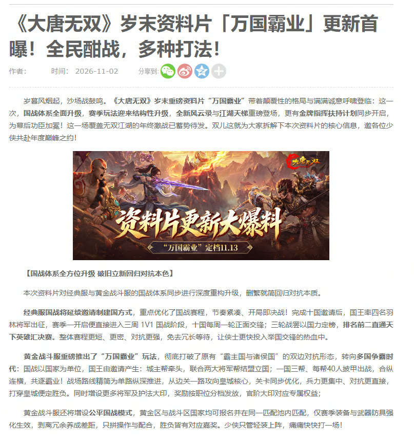
CASE 05 / SOCIAL
网易互娱《大唐无双》年末战役：资料片「万国霸业」11.13 上线，潜龙争霸赛 11.21 落地线下。 从版本首曝到赛事收口，每个节点配一套内容。
国战体系重做、赛季玩法升级、全新风云录与江湖天梯，黄金战服新区「森罗万象」11.13 开启。 内容跟着版本节奏走：先曝光，再开战，最后落到线下总决赛。
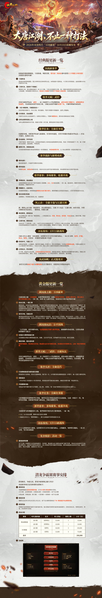
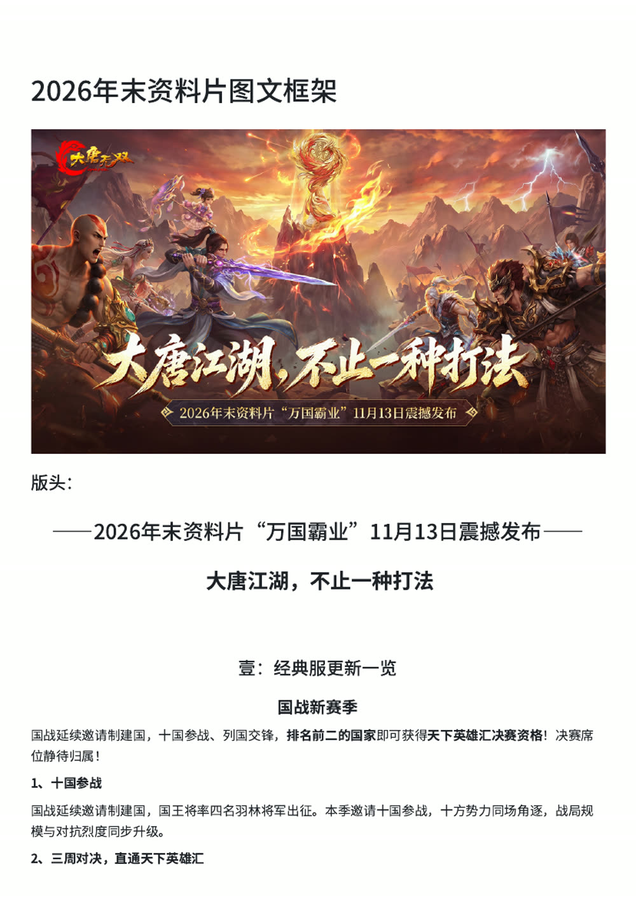
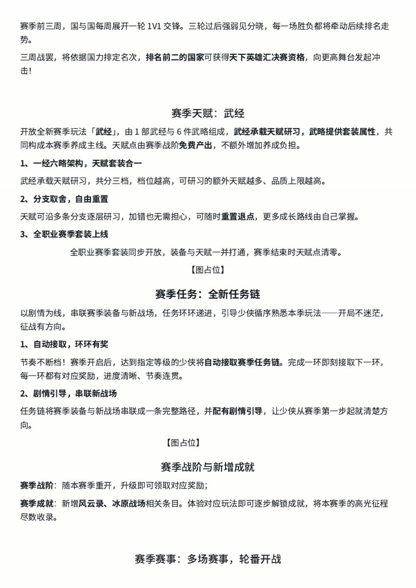
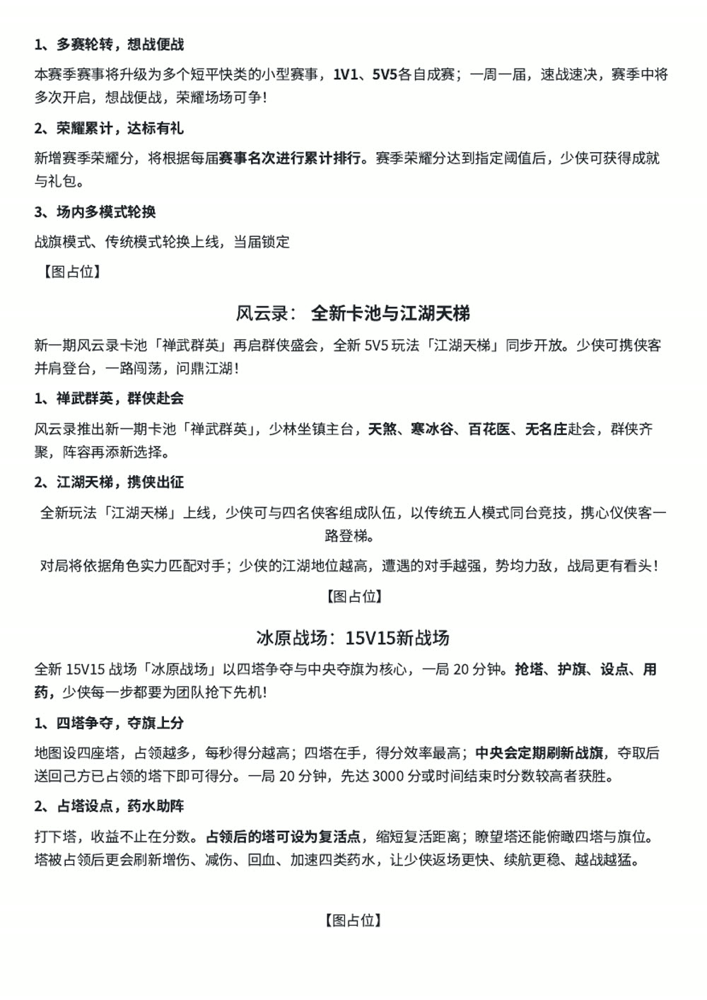
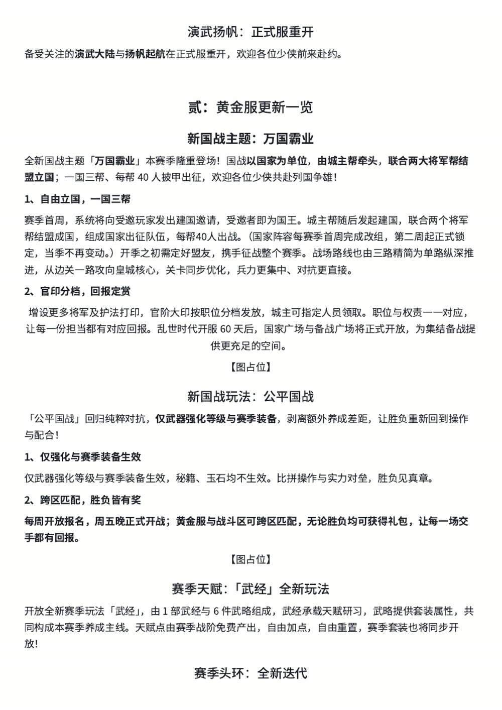
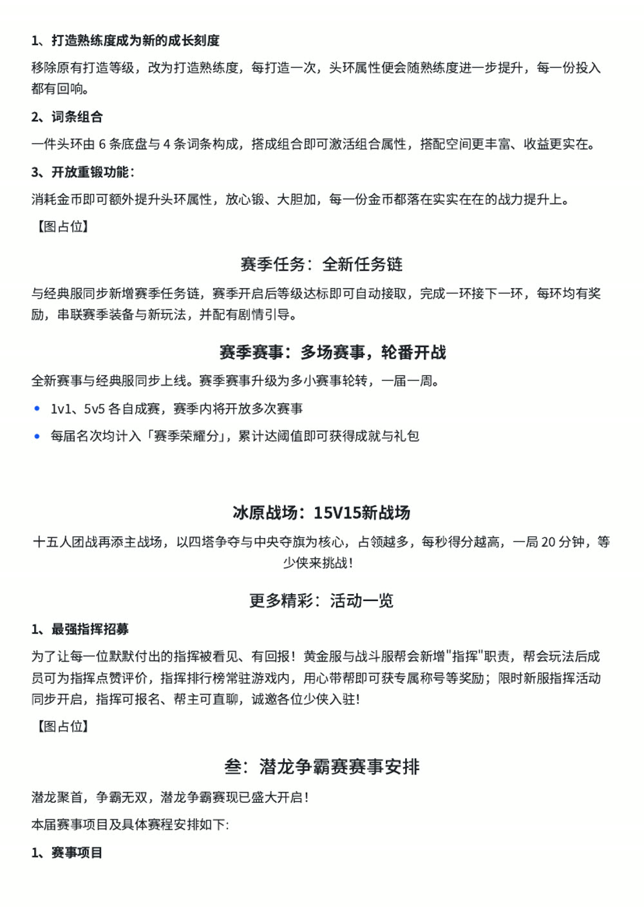
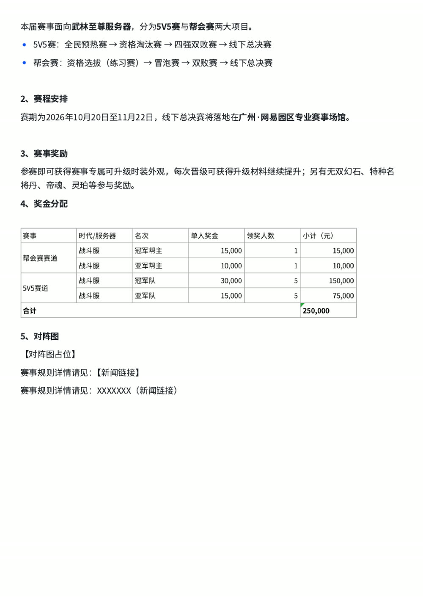
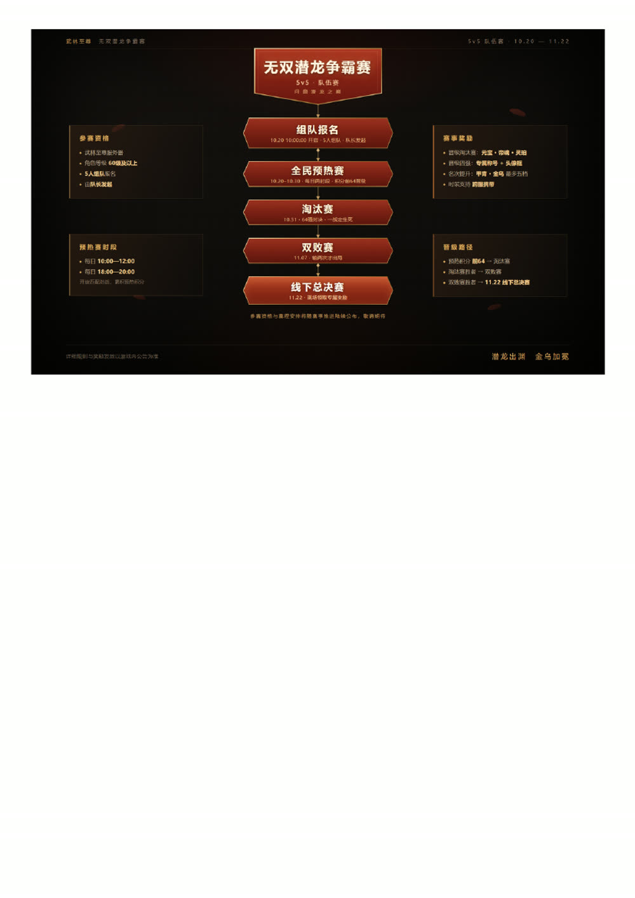
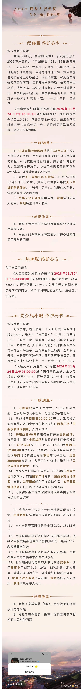
第一篇新闻稿配一张内容长图，把国战体系、赛季玩法、风云录和江湖天梯讲明白。 先让玩家知道“这个版本改了什么”，再谈什么时候上线。

第二篇落在开服：11.13 资料片上线、黄金战服新区「森罗万象」开启， 把版本信息和福利一起推出去，承接首曝带来的关注。
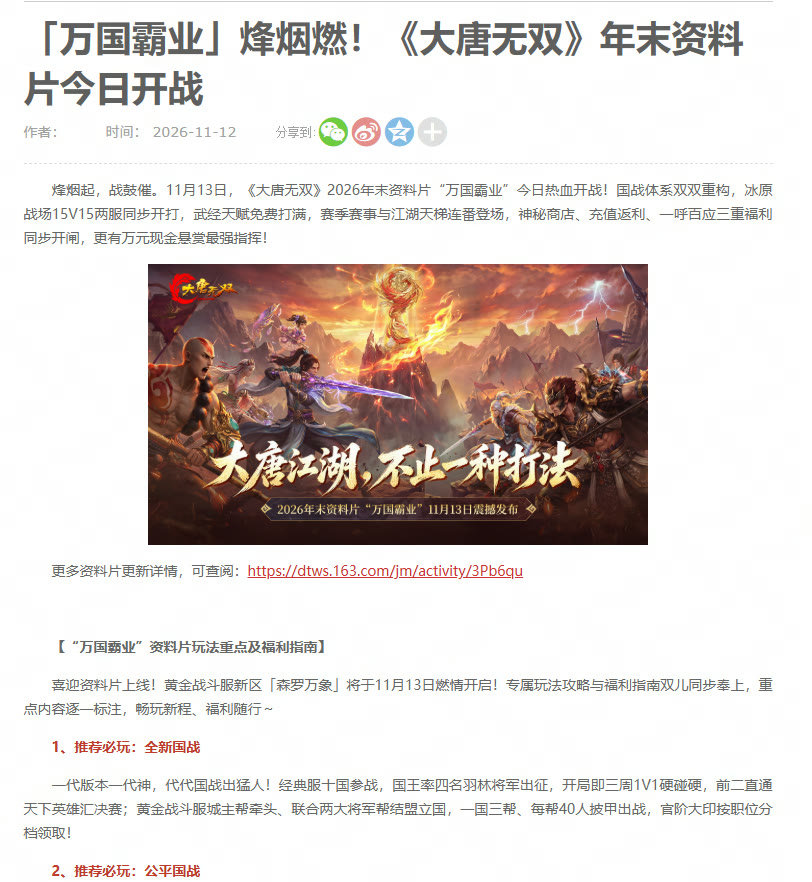
赛事产出 / MATCH CONTENT
跟产品确认版本节点、赛程、对阵、时间地点和每个阶段要主推什么。 先把不能错的信息钉死：日期、赛制、队伍、场地，再谈创意。
资料片首曝负责“讲清版本”，开战预告负责“钉上线时间”，赛事负责“落到线下”。 三个阶段各有一套内容，不做重复表达。
脚本、剪辑、封面、文案一起做。竖版给社媒，横版给现场和长视频场景， 主视觉单独出一版，保证线下物料和线上内容是一套东西。
按节点发布，跟着版本和赛事节奏走。哪条内容带来讨论、哪个封面点击更好， 记录下来给下一次用。
在苏州地铁负责官号短视频的选题、脚本、拍摄、采访、剪辑与全渠道发布， 联动王者荣耀、百家讲坛、苏超与城市文旅，2 条自然流单条点赞 3w+，总计曝光 150w+。


一个版本的内容，不是一条片子打全场。版本在推进，用户关注的点也在变： 首曝看信息，上线看福利，决赛看结果和现场。 按节点拆内容，比堆一条大而全的片子更有效。